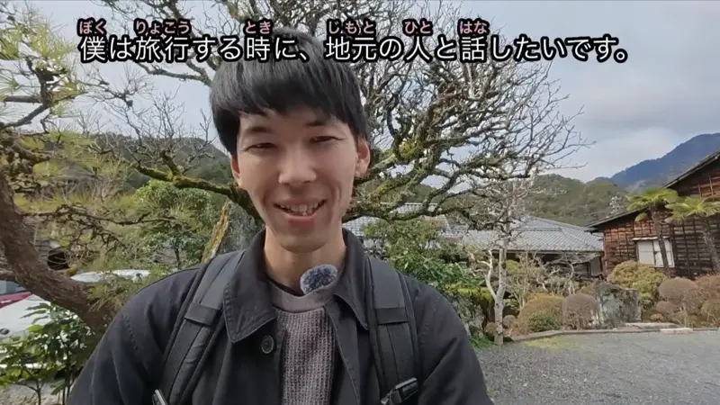
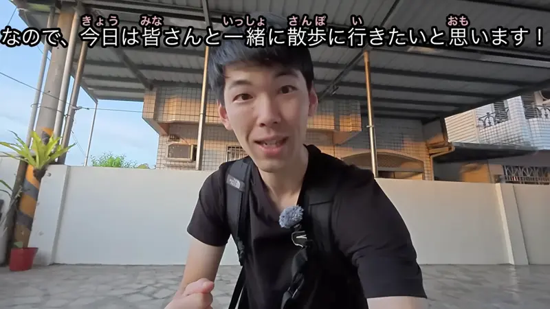

と (With)

YouTube · video
僕は旅行する時に、地元の人と話したいです。
"When I travel, I want to talk with the local people."
と after a person means "with": the person you do the action together with. It goes right after them: 地元の人 + と.
On this card, it answers "With who?": talk with the locals. Then the verb comes later.
Between two nouns と means "and" (ヨーロッパと南米). With a verb after it, it's "with". Same in polite and casual speech.

Weakest Beast · Episode 5
私は 克己さんと一緒にいたい。
"I want to be with Katsumi."
と after a person means "with". On this card, 克己さん + と + 一緒に + いたい ("want to be") = "want to be with Katsumi".
Examples
Someone asks who you went to the concert with.
姉と行った。
"I went with my sister."
CasualSaturday plans.
友達と映画を見ます。
"I'm watching a movie with a friend."
PoliteAsking a coworker to lunch.
私と一緒に食べませんか？
"Want to eat with me?"
一緒に (together) after と makes the "with" extra clear. Very common.
PoliteWith and without
京都に行きました。
I went to Kyoto. Maybe alone, we don't know.
母と京都に行きました。
I went to Kyoto with my mom. Now we know who came along.
Sentence mining

YouTube · video
なので、今日は皆さんと一緒に散歩に行きたいと思います！
"So today I'd like to go for a walk with all of you!"
と一緒に: "together with". The second と (と思います) is a different と.
YouTube · video
でも去年や一昨年は友達とよくキャンプをしていましたよ。
"But last year and the year before, I often went camping with friends."
よく (often) can sit between と and the verb.

Quartet · Episode 1
音楽と一緒に暮らしたいです
"I want to live with music."
音楽 + と一緒に: "together with music".

Shirokuma Cafe · Season 1, Episode 4
あなたと行きたい海辺のドライブ
"The seaside drive I want to go on with you."
あなたと行きたい describes the drive: the one I want to go on with you.
Weakest Beast · Episode 10
カイジと一緒に。
"Together with Kaiji."
カイジ + と + 一緒に ("together") = "together with Kaiji". The verb is left off.
Overprotected Kahoko · Episode 10
じいじと一緒にいると
"When she's with Grandpa..."
じいじ ("Grandpa") + と + 一緒にいる ("be together") + と ("when") = "when she's with Grandpa".

Shirokuma Cafe · Episode 17
パンダくんと一緒に撮った写真、初めてだよ！
"It's my first photo taken with Panda!"
と + 一緒に = together with.
Reference
A Dictionary of Basic Japanese Grammar
Entry "to²" (with) · pp. 476–478